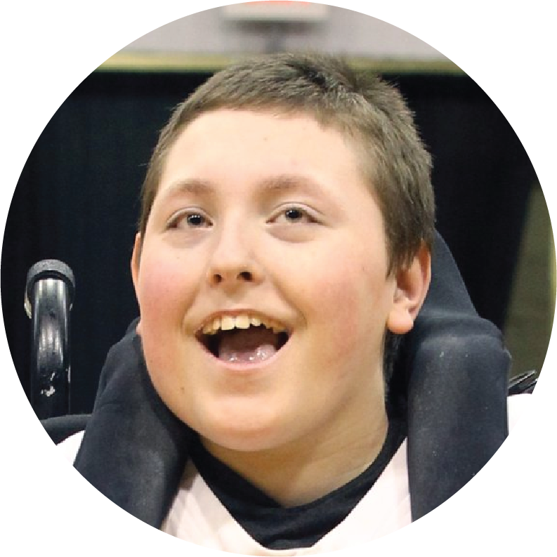

Northeastern makes a commitment to helping veterans
Trevor recieved the Jack Grinold scholarship, established for legendary former rower Jack Grinold. While Trevor was captain of the NU men's rowing team, they led several fundraising efforts. Paying it forward just like jack did.

Having my education costs taken care of by Northeastern and the Department of Veterans Affairs was a huge plus. I could concentrate on my studies stress-free.
Sarah Nelson


more campus life stories
